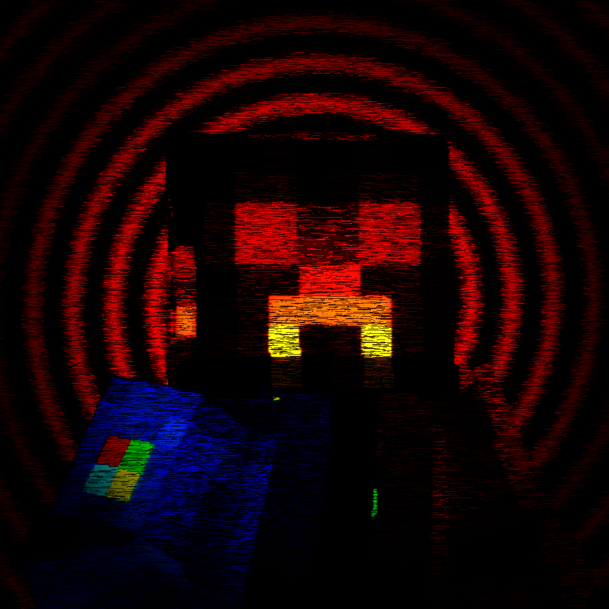

WHO AM I?

🌐 LinktreeHeya, I'm the typical idiot who keeps using the same stupid username since 2012. :)
I'm also a free-time indie developer/designer and maybe a musician. (IDK... How are there people that enjoy my music? ._.).
I've been coding projects since I was 13. I prefer working alone rather than trying to explain my ideas to others. ;3
I love coding even more than playing. I also love teasing/breaking codes to the limit, especially with AIs, to figure out how to evade or manipulate them, the kind of stuff useful for speedrunning. ^w^
My favorite music styles are orchestral, arcade/chiptune, jazz, ambient, metal, classic, etc. I always say that my music is not the typical you play on loop; it is made to give a message or even a way to express emotions. When I compose, I always focus on giving each track a personality, an emotion! Just like my characters! :D (Let's not talk about the leitmotifs... =_=)
Even if I hate AI with all my heart, I may admit I used it sometimes for my projects! XD (Maybe due to the plot's need, or maybe because I was lazy, but I try to avoid it as far as I can! [DON'T CALL ME HYPOCRITE!!!!!] >:3)
And that's it. :)
- Coder/Designer/ComposerElProHD405
- Tester/HelperYGV2
- Special thanksJaretinn_
- CODING VS. CODE OVERALL!
- VIDEOI use Sony Vegas... Yeah, quite obsolete... ._.
- AUDIOI use Audacity because... uh... why not?
- MUSICI used to make it on FL Studio and then switched to BandLab. My last music made on FL Studio was "Deepest Hole of Remembrance"; also, I used the SM64 soundfont for most of my tracks back then.
- ARTI've always used "Paint.NET" since I started making content for MC.
- 3D MODELINGI tried Blender, and then I wanted to blend myself in a grinder... I switched to Blockbench due to it being better adjusted to my needs. >w<
- 3D ANIMATIONI used Mineimator, ROBLOX STUDIO, Blockbench, and even sometimes sprite animations made by me in Paint.NET. (Yeah, I love torturing myself...)
- WEBSITEWell, this website was made using HTML/CSS/JS, mostly with the help of "Claude"... I must admit, this AI has impressed me so bad... Now I feel like a hypocrite... ;_; (But hey! At least I tested the website many times and tried to make it feel at least interactive... I hope so... q_q")
MY PAST
I began coding when I was 13, but most of the ideas I had came from when I was even younger than that! (IMPORTANT NOTE: DO NOT let your "inner child" write your script, even less if it's autistic... Personal experience... -_-).
None of those projects I made back then were public; they were made for my friends or just for entertaining myself, feeding a story that back then I thought was never going to end.
About the projects: they were buggy, confusing even to set up, full of stupid requisites (I HATE YOU, "PJRLL" >:c), and also full of jokes that now I see are a bit cringy NGL (some of them are pretty good even for a childish mind NGL either XD). (Even with that, I still have them and sometimes revisit them due to nostalgic crap! <3).
My first "successful" creation was "Porky Jones Dungeon" (PJD); it was my first MC map with good progression (a BATIM rip-off, NGL! XD). I was 14 when I finished it. That map made me realize that storytelling and creating were more entertaining than playing games (they give me stress!). They make me feel like I'm wasting my time!
2020 - 2023
In 2020, during covid, I learned about video editing, and then I started bringing those ideas to life! In 2021 I had depression and tried to learn to draw by myself. I made some art using "Paint.NET." I kept the cute drawings, such as the "PJ" you can see at the end of "Experiment-3008: Case Omen VHS," but the depressive ones were left forgotten. ;3 In 2022 I made my first FNF mod and also created my first song on FL Studio! :D Literally, all the other songs were remixes made with "Rave DJ," and my only original song was a joke one called "sin"; in that song, you battled against a "PG"... And yeah, that's why Porky's theme is called "Sinner." Also, fun fact, the "sin" song is a mess of notes. I don't know if I still have the FLP file, but what I know is that I still have the audio file... also another one called "sin-2" that was made for a V2 I made in 2023. Between 2021 & 2023, my friends and I got into a tradition of watching a video at the end of the year (the videos were done by me with a bit of help from them); those videos were like movies. We made 3 in total. They were like our own "REWINDS" (and that's where "Rewinded Saga" comes in during 2024 until 2026). So yeah, in 2023 technically I ended the story... right? ._.
2024
In 2024, in January, I made a remake of one of my first games (Manueh Family Dinner). The game came out really cool, but as I mentioned, I don't like to publish my old stuff! In March I came up with an idea as I was playing a modpack with one of my friends, and in April I encouraged myself to publish that idea as my first project: "Porky's Legacy." This project started as something unrelated to the lore itself, but as I began to see the chance of making a good ending to the story, I filtered the story somehow to be at least comprehensible to anyone who played! Yeah, most of my projects have Easter eggs related to my old projects, but those things are mostly "irrelevant" or reexplained inside the lore (directly/indirectly) if they're really that relevant for the storytelling! >:3
For me, 2022/2023 were mostly memorable years, but 2024 had a turn not only in everything but especially in me; I had a crisis while developing V2 of "Porky's Legacy" and then started to make "Rewinded Nights." I still remember that August; I started to feel empty, confused, and full of anguish. I won't lie to you when I say that every time I saw myself in the mirror, I didn't even recognize myself, as if my body were not mine; this is because in the past I was someone who changed its personality to fit, but in the end I became empty without knowing who I really was. I had to take a break and learn about psychology and philosophy in my free time (I still enjoy learning more about it! ^w^); I even played video games to escape reality itself... But it didn't work; instead, I mixed all those turmoils, and I made the character "Malform." Then I took several photos of one of my plushies, "Osit," and created the "Nigbear Consequences." Both characters had a deep trauma story but different ways of getting over it. While "Malform" was manipulable, defensive, and always trying to fit in, "Nigbear Consequences" led its trauma through humor, became self-aware of its situation, and didn't care anymore; in fact, he's a very sensible character with a really rough facade.
2025
In 2025 I discovered in April that people were starting to make reviews about my content. I hadn't planned to continue Porky's Legacy: Era of Corruption, but that encouraged me. I published V2 just before having surgery; June was a really rough month. I hate being glued to a bed! I was feeling impotent and futile; I was also angry because the version didn't have reviews at all! I was acting like back in 2021/2023. I decided so many things! Such as abandoning "PL:EOC," I even created a mod while I was weak, switching between the PC and my bed! That mod was called "Absentia," and I obviously didn't finish it. (Basically the mod was going to be like progressive dementia, inspired mostly by "The Caretaker"; instead, I made a "Porky" cameo inside that mod. I discovered so many things I could do with it (then it was added to "PL:EOC" V3 as "PG"). During that summer I started working on "Rewinded Misery." I started writing ideas and scripts, making sprites, and also making most of the music (like 40% of the tracks were updated in 2026 before uploading the game because of consistency or leitmotifs). After finishing the "Lego Ending," I decided to make the V3 of "PL:EOC" because "Hazed Plains" was an essential piece for the development (due to the spores, which includes the "Corrupted Spore" biome itself). After publishing the version, my mod received a second boom; this time a lot of people tried it. That thing was the perfect motivation for me to finish the project as it was meant to be.
2026
In 2026 I was preparing myself to end the story; I uploaded both V4/V5 of "PL:EOC." I also uploaded Rewinded Misery as an "ending of the story." Sadly, my grandpa died the same day that "Porky's Legacy" became 2 years old. :c
NOWADAY
Nowadays I have updated my website, and I'm taking things with calm and not obligated due to stretched schedules! I do it just for fun! ^w^